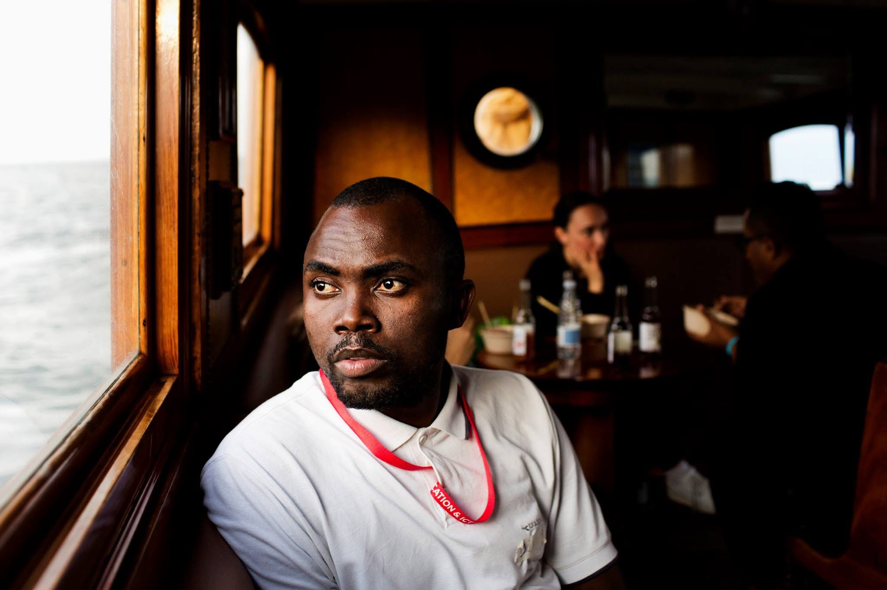

Daniel C. Emerimana

Summary
Dedicated professional with a proven track record in community services, adept at facilitating youth programs,
coordinating initiatives, and showcasing strong supervisory and leadership skills. Adept at fostering
community engagement, implementing impactful programs, and leading teams to achieve organizational goals.
Passionate about making a positive impact through effective collaboration and program management.
Proactively contributes to the development and execution of impactful programs, fostering positive community
engagement and growth.
Education
- Bachelor of Arts in Healthcare Management |
Southern New Hampshire University (01/2019 – 01/2023)
- Diploma of Liberal Studies| Regis University(05/2011 – 08/2014)
- Diploma of Liberal Studies| University for Peace(01/2019 – 09/2019)
- Post-Graduate Certificate in Social Innovation Management| Amani Institute(11/2015 – 11/2016)
Work Experience
- Warehouse supervisor
C. R. Laurence
August 2020 – May 2023
- Managed the warehouse team, facilitating
solutions to day-to-day operational issues and
achieving short- and long-term performance
goals.
- Oversaw daily warehouse operations, including
inventory control, space management, quality
assurance, logistics, shipping, and customer
service.
- Scheduled and supervised the warehouse team
to maximize productivity and minimize
overtime.
- Civic engagement Facilitator
NEEDS CENTER
March 2018 – March 2020
- Conducted needs assessments to identify
specific requirements, tailoring support to individual circumstances.
- Offered psychosocial support to newcomer and
refugee children and youth to enhance their
success during participation in activities and
their overall settlement experiences.
- Facilitated referrals to community resources
and enhanced services, ensuring access to
education, health, employment, financial
literacy, and more.
Skills
- Needs Assessment
Program Development:

- Cross-cultural
Communication:
- Data Management:
Certifications
- Foundations of Project Management
- Foundations: Data, Data, Everywhere
- Ask Questions to Make Data-Driven
Decisions
- Foundations of Cybersecurity
- Introduction to Databases
- Share Data Through the Art of
Visualization
- Data Analysis with R Programming
Other